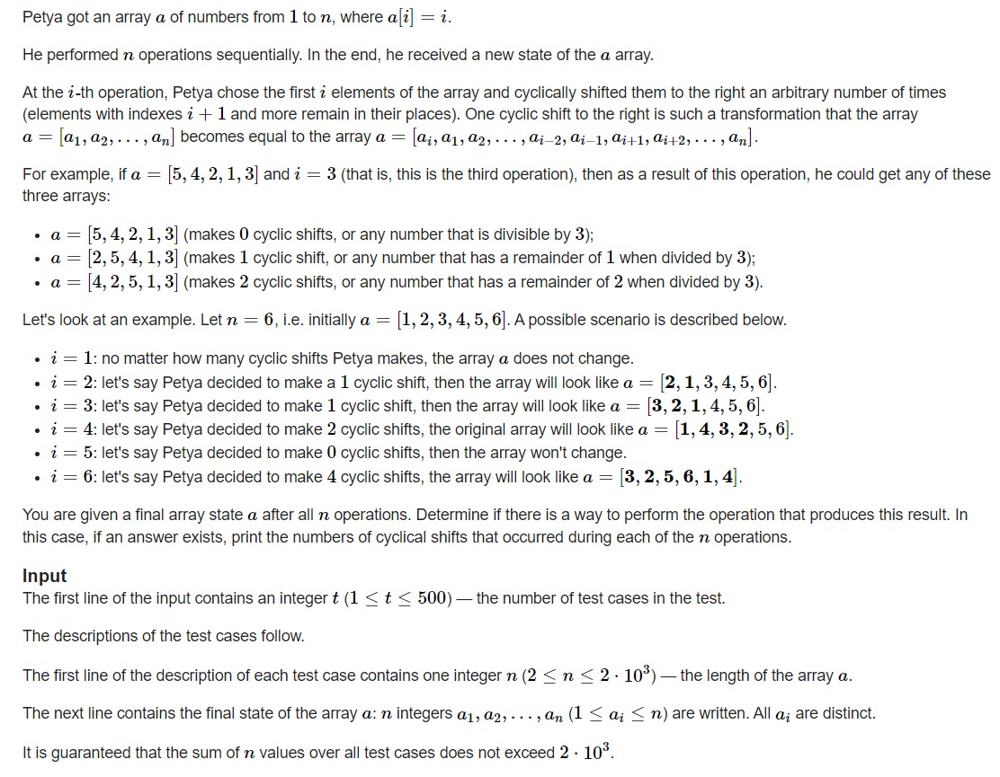
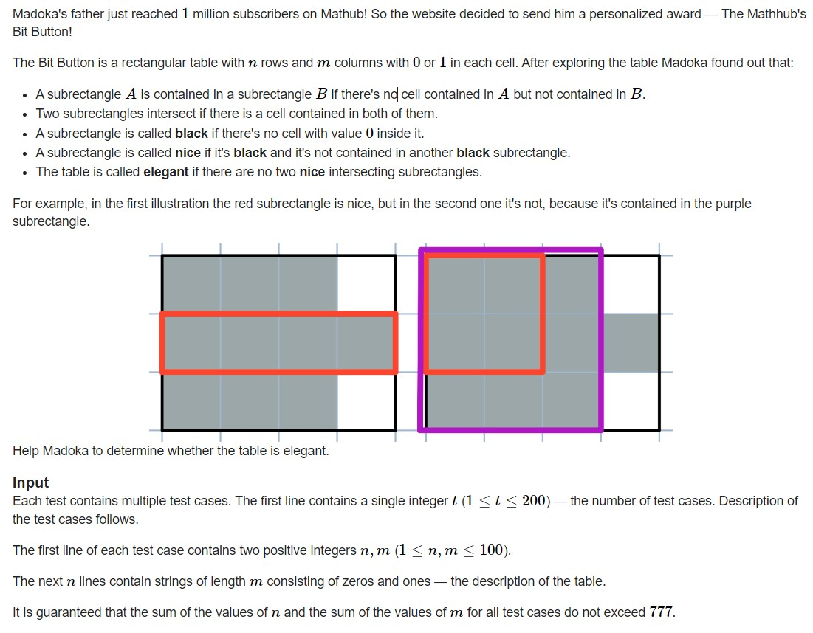
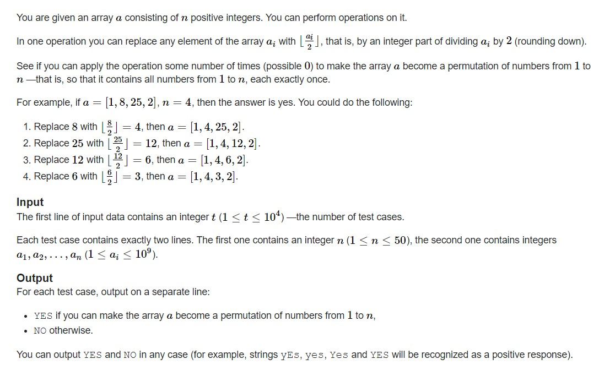

<!DOCTYPE html>


<html lang="zh-CN">
  

    <head>
      <meta charset="utf-8" />
        
      <meta
        name="viewport"
        content="width=device-width, initial-scale=1, maximum-scale=1"
      />
      <title>22.10.28刷题记录 |  jan&#39;s Blog</title>
  <meta name="generator" content="hexo-theme-ayer">
      
      <link rel="shortcut icon" href="/favicon.ico" />
       
<link rel="stylesheet" href="/dist/main.css">

      
<link rel="stylesheet" href="/css/fonts/remixicon.css">

      
<link rel="stylesheet" href="/css/custom.css">
 
      <script src="https://cdn.staticfile.org/pace/1.2.4/pace.min.js"></script>
       
 

      <link
        rel="stylesheet"
        href="https://cdn.jsdelivr.net/npm/@sweetalert2/theme-bulma@5.0.1/bulma.min.css"
      />
      <script src="https://cdn.jsdelivr.net/npm/sweetalert2@11.0.19/dist/sweetalert2.min.js"></script>

      <!-- mermaid -->
      
      <style>
        .swal2-styled.swal2-confirm {
          font-size: 1.6rem;
        }
      </style>
    <link rel="alternate" href="/atom.xml" title="jan's Blog" type="application/atom+xml">
</head>
  </html>
</html>


<body>
  <div id="app">
    
      
    <main class="content on">
      <section class="outer">
  <article
  id="post-22-10-28刷题记录"
  class="article article-type-post"
  itemscope
  itemprop="blogPost"
  data-scroll-reveal
>
  <div class="article-inner">
    
    <header class="article-header">
       
<h1 class="article-title sea-center" style="border-left:0" itemprop="name">
  22.10.28刷题记录
</h1>
 

      
    </header>
     
    <div class="article-meta">
      <a href="/2022/10/28/22-10-28%E5%88%B7%E9%A2%98%E8%AE%B0%E5%BD%95/" class="article-date">
  <time datetime="2022-10-28T08:49:03.000Z" itemprop="datePublished">2022-10-28</time>
</a>   
<div class="word_count">
    <span class="post-time">
        <span class="post-meta-item-icon">
            <i class="ri-quill-pen-line"></i>
            <span class="post-meta-item-text"> 字数统计:</span>
            <span class="post-count">1.8k</span>
        </span>
    </span>

    <span class="post-time">
        &nbsp; | &nbsp;
        <span class="post-meta-item-icon">
            <i class="ri-book-open-line"></i>
            <span class="post-meta-item-text"> 阅读时长≈</span>
            <span class="post-count">9 分钟</span>
        </span>
    </span>
</div>
 
    </div>
      
    <div class="tocbot"></div>


  
    <div class="article-entry" itemprop="articleBody">
       
  <p><font size="5">今天的题有点简单捏(´；ω；‘)</font></p>
<h1 id="Make-Equal-With-Mod"><a href="#Make-Equal-With-Mod" class="headerlink" title="Make Equal With Mod"></a><a target="_blank" rel="noopener" href="https://codeforces.com/problemset/problem/1656/C">Make Equal With Mod</a></h1><p>题目大意:<br>给定一个数组$a$,能进行以下操作:</p>
<ul>
<li>选定一个$x(x\geq 2)$</li>
<li>对每个$a_i$,对$a_i$赋值为$a_i\%x$</li>
</ul>
<p>问最终能不能将数组所有元素都变成一个数。<br>由于$x$是大于等于$2$的，因此对于任意一个大于等于$2$的数都可以变为$1$或$0$，<br>因此我们可以把所有的数都变成$0$或者变成$1$。<br>但当数组中有$1$时就不能有$0$或$2$(自己想)</p>
<p>题目中还有一个坑，假如有$a=\{1,3,3,3,3,4\}$数组中有$1$但没有$0$和$2$,但无论把哪个数变成$1$后都会有一个数变成$0$.</p>
<p>代码：<br><figure class="highlight cpp"><table><tr><td class="gutter"><pre><span class="line">1</span><br><span class="line">2</span><br><span class="line">3</span><br><span class="line">4</span><br><span class="line">5</span><br><span class="line">6</span><br><span class="line">7</span><br><span class="line">8</span><br><span class="line">9</span><br><span class="line">10</span><br><span class="line">11</span><br><span class="line">12</span><br><span class="line">13</span><br><span class="line">14</span><br><span class="line">15</span><br><span class="line">16</span><br><span class="line">17</span><br><span class="line">18</span><br><span class="line">19</span><br><span class="line">20</span><br><span class="line">21</span><br><span class="line">22</span><br><span class="line">23</span><br><span class="line">24</span><br><span class="line">25</span><br><span class="line">26</span><br><span class="line">27</span><br><span class="line">28</span><br><span class="line">29</span><br><span class="line">30</span><br><span class="line">31</span><br><span class="line">32</span><br><span class="line">33</span><br><span class="line">34</span><br><span class="line">35</span><br><span class="line">36</span><br><span class="line">37</span><br><span class="line">38</span><br><span class="line">39</span><br><span class="line">40</span><br><span class="line">41</span><br><span class="line">42</span><br><span class="line">43</span><br><span class="line">44</span><br><span class="line">45</span><br><span class="line">46</span><br></pre></td><td class="code"><pre><span class="line"><span class="meta">#<span class="keyword">include</span> <span class="string">&lt;bits/stdc++.h&gt;</span></span></span><br><span class="line"><span class="meta">#<span class="keyword">define</span> IOS ios_base::sync_with_stdio(0); cin.tie(0);</span></span><br><span class="line"><span class="meta">#<span class="keyword">define</span> INF 0x3f3f3f3f</span></span><br><span class="line"><span class="meta">#<span class="keyword">define</span> mod 1000000007</span></span><br><span class="line"><span class="meta">#<span class="keyword">define</span> PII pair<span class="string">&lt;int,int&gt;</span></span></span><br><span class="line"><span class="meta">#<span class="keyword">define</span> PLL pair<span class="string">&lt;ll,ll&gt;</span></span></span><br><span class="line"><span class="keyword">typedef</span> <span class="type">long</span> <span class="type">long</span> ll;</span><br><span class="line"><span class="keyword">using</span> <span class="keyword">namespace</span> std;</span><br><span class="line"><span class="type">int</span> t;</span><br><span class="line">string s;</span><br><span class="line"><span class="type">int</span> m;</span><br><span class="line"><span class="type">int</span> n;</span><br><span class="line">ll k;ll x;</span><br><span class="line"><span class="function"><span class="type">void</span> <span class="title">solve</span><span class="params">()</span></span>&#123;</span><br><span class="line">    cin&gt;&gt;n;</span><br><span class="line">    set&lt;<span class="type">int</span>&gt; se;</span><br><span class="line">    vector&lt;<span class="type">int</span>&gt; v;</span><br><span class="line">    <span class="keyword">for</span>(<span class="type">int</span> i=<span class="number">1</span>;i&lt;=n;i++)&#123;</span><br><span class="line">        <span class="type">int</span> xx;</span><br><span class="line">        cin&gt;&gt;xx;</span><br><span class="line">        v.<span class="built_in">push_back</span>(xx);</span><br><span class="line">        <span class="keyword">if</span>(!se.<span class="built_in">count</span>(xx))&#123;</span><br><span class="line">            se.<span class="built_in">insert</span>(xx);</span><br><span class="line">        &#125;</span><br><span class="line">    &#125;</span><br><span class="line">    <span class="keyword">if</span>(se.<span class="built_in">count</span>(<span class="number">1</span>))&#123;</span><br><span class="line">        <span class="keyword">if</span>(se.<span class="built_in">count</span>(<span class="number">2</span>)||se.<span class="built_in">count</span>(<span class="number">0</span>))&#123;</span><br><span class="line">            cout&lt;&lt;<span class="string">&quot;NO\n&quot;</span>;</span><br><span class="line">            <span class="keyword">return</span>;</span><br><span class="line">        &#125;</span><br><span class="line">        <span class="built_in">sort</span>(v.<span class="built_in">begin</span>(),v.<span class="built_in">end</span>());</span><br><span class="line">        <span class="keyword">for</span>(<span class="type">int</span> i=<span class="number">0</span>;i&lt;v.<span class="built_in">size</span>()<span class="number">-1</span>;i++)&#123;</span><br><span class="line">            <span class="keyword">if</span>(v[i+<span class="number">1</span>]-v[i]==<span class="number">1</span>)&#123;</span><br><span class="line">                cout&lt;&lt;<span class="string">&quot;NO\n&quot;</span>;</span><br><span class="line">                <span class="keyword">return</span>;</span><br><span class="line">            &#125;</span><br><span class="line">        &#125;</span><br><span class="line">    &#125;</span><br><span class="line">    cout&lt;&lt;<span class="string">&quot;YES\n&quot;</span>;</span><br><span class="line">&#125;</span><br><span class="line"><span class="function"><span class="type">int</span> <span class="title">main</span><span class="params">()</span></span>&#123;</span><br><span class="line">    IOS</span><br><span class="line">    cin&gt;&gt;t;</span><br><span class="line">    <span class="keyword">while</span>(t--)</span><br><span class="line">    <span class="built_in">solve</span>();</span><br><span class="line">&#125;</span><br></pre></td></tr></table></figure></p>
<h1 id="Twist-the-Permutation"><a href="#Twist-the-Permutation" class="headerlink" title="Twist the Permutation"></a><a target="_blank" rel="noopener" href="https://codeforces.com/problemset/problem/1650/D">Twist the Permutation</a></h1><p></p>
<p>题目的操作是从$1$开始到$n$，也就意味着在给出结果数组时可以从$n$开始逆推出开始的数组，<br>剩下的就是记录下操作的次数。<br>如何逆推出操作的次数呢?<br>数组的下标从$0$开始，我们目前手上有一个在做完所有操作后的数组，最后的操作一定是对$n$的操作，<br>也就是找到$n$的位置就可以找出对$n$的操作次数，设当前$n$的位置为$index$，则操作次数为:</p>
<script type="math/tex; mode=display">(index+1)\%n</script><p>推广到$i$上:</p>
<script type="math/tex; mode=display">(index+1)\%i</script><p>代码：<br><figure class="highlight cpp"><table><tr><td class="gutter"><pre><span class="line">1</span><br><span class="line">2</span><br><span class="line">3</span><br><span class="line">4</span><br><span class="line">5</span><br><span class="line">6</span><br><span class="line">7</span><br><span class="line">8</span><br><span class="line">9</span><br><span class="line">10</span><br><span class="line">11</span><br><span class="line">12</span><br><span class="line">13</span><br><span class="line">14</span><br><span class="line">15</span><br><span class="line">16</span><br><span class="line">17</span><br><span class="line">18</span><br><span class="line">19</span><br><span class="line">20</span><br><span class="line">21</span><br><span class="line">22</span><br><span class="line">23</span><br><span class="line">24</span><br><span class="line">25</span><br><span class="line">26</span><br><span class="line">27</span><br><span class="line">28</span><br><span class="line">29</span><br><span class="line">30</span><br><span class="line">31</span><br><span class="line">32</span><br><span class="line">33</span><br><span class="line">34</span><br><span class="line">35</span><br><span class="line">36</span><br><span class="line">37</span><br><span class="line">38</span><br><span class="line">39</span><br><span class="line">40</span><br><span class="line">41</span><br><span class="line">42</span><br><span class="line">43</span><br><span class="line">44</span><br><span class="line">45</span><br><span class="line">46</span><br><span class="line">47</span><br></pre></td><td class="code"><pre><span class="line"><span class="meta">#<span class="keyword">include</span> <span class="string">&lt;bits/stdc++.h&gt;</span></span></span><br><span class="line"><span class="meta">#<span class="keyword">define</span> IOS ios_base::sync_with_stdio(0); cin.tie(0);</span></span><br><span class="line"><span class="meta">#<span class="keyword">define</span> INF 0x3f3f3f3f</span></span><br><span class="line"><span class="meta">#<span class="keyword">define</span> mod 1000000007</span></span><br><span class="line"><span class="meta">#<span class="keyword">define</span> PII pair<span class="string">&lt;int,int&gt;</span></span></span><br><span class="line"><span class="meta">#<span class="keyword">define</span> PLL pair<span class="string">&lt;ll,ll&gt;</span></span></span><br><span class="line"><span class="keyword">typedef</span> <span class="type">long</span> <span class="type">long</span> ll;</span><br><span class="line"><span class="keyword">using</span> <span class="keyword">namespace</span> std;</span><br><span class="line"><span class="type">int</span> t;</span><br><span class="line">string s;</span><br><span class="line"><span class="type">int</span> m;</span><br><span class="line"><span class="type">int</span> n;</span><br><span class="line">ll k;ll x;</span><br><span class="line"><span class="function"><span class="type">void</span> <span class="title">solve</span><span class="params">()</span></span>&#123;</span><br><span class="line">    cin&gt;&gt;n;</span><br><span class="line">    <span class="function">vector&lt;<span class="type">int</span>&gt; <span class="title">v</span><span class="params">(n+<span class="number">3</span>)</span></span>;</span><br><span class="line">    <span class="keyword">for</span>(<span class="type">int</span> i=<span class="number">0</span>;i&lt;n;i++)&#123;</span><br><span class="line">        cin&gt;&gt;v[i];</span><br><span class="line">    &#125;</span><br><span class="line">    <span class="function">vector&lt;<span class="type">int</span>&gt; <span class="title">ans</span><span class="params">(n+<span class="number">3</span>)</span></span>;</span><br><span class="line">    <span class="keyword">for</span>(<span class="type">int</span> i=n;i&gt;<span class="number">0</span>;i--)&#123;</span><br><span class="line">        <span class="type">int</span> ind=<span class="number">0</span>;</span><br><span class="line">        <span class="keyword">for</span>(<span class="type">int</span> j=<span class="number">0</span>;j&lt;i;j++)&#123;</span><br><span class="line">            <span class="keyword">if</span>(v[j]==i)&#123;</span><br><span class="line">                ind=j;<span class="keyword">break</span>;</span><br><span class="line">            &#125;</span><br><span class="line">        &#125;</span><br><span class="line">        <span class="function">vector&lt;<span class="type">int</span>&gt; <span class="title">b</span><span class="params">(i)</span></span>;</span><br><span class="line">        <span class="keyword">for</span>(<span class="type">int</span> j=<span class="number">0</span>;j&lt;i<span class="number">-1</span>;j++)&#123;</span><br><span class="line">            b[j]=v[(ind+<span class="number">1</span>+j)%i];</span><br><span class="line">        &#125;</span><br><span class="line">        <span class="keyword">for</span>(<span class="type">int</span> j=<span class="number">0</span>;j&lt;i<span class="number">-1</span>;j++)&#123;</span><br><span class="line">            v[j]=b[j];</span><br><span class="line">        &#125;</span><br><span class="line">        ans[i]=(ind+<span class="number">1</span>==i)?<span class="number">0</span>:(ind+<span class="number">1</span>)%i;</span><br><span class="line">    &#125;</span><br><span class="line">    ans[<span class="number">1</span>]=<span class="number">0</span>;</span><br><span class="line">    <span class="keyword">for</span>(<span class="type">int</span> i=<span class="number">1</span>;i&lt;=n;i++)&#123;</span><br><span class="line">        cout&lt;&lt;ans[i]&lt;&lt;<span class="string">&quot; &quot;</span>;</span><br><span class="line">    &#125;cout&lt;&lt;<span class="string">&quot;\n&quot;</span>;</span><br><span class="line">&#125;</span><br><span class="line"><span class="function"><span class="type">int</span> <span class="title">main</span><span class="params">()</span></span>&#123;</span><br><span class="line">    IOS</span><br><span class="line">    cin&gt;&gt;t;</span><br><span class="line">    <span class="keyword">while</span>(t--)</span><br><span class="line">    <span class="built_in">solve</span>();</span><br><span class="line">&#125;</span><br></pre></td></tr></table></figure></p>
<h1 id="Madoka-and-the-Elegant-Gift"><a href="#Madoka-and-the-Elegant-Gift" class="headerlink" title="Madoka and the Elegant Gift"></a><a target="_blank" rel="noopener" href="https://codeforces.com/problemset/problem/1647/B">Madoka and the Elegant Gift</a></h1><p></p>
<p>我们很容易知道，当$n=1||m=1$时，恒成立。<br>当$n\neq 1\&amp;\&amp;m\neq 1$时，每个$2 \times 2$的区域中不能有$3$个$1$.<br>因为当存在有$3$个$1$的$2 \times 2$区域时就意味着有两个矩形$intersecting$.<br>代码:<br><figure class="highlight cpp"><table><tr><td class="gutter"><pre><span class="line">1</span><br><span class="line">2</span><br><span class="line">3</span><br><span class="line">4</span><br><span class="line">5</span><br><span class="line">6</span><br><span class="line">7</span><br><span class="line">8</span><br><span class="line">9</span><br><span class="line">10</span><br><span class="line">11</span><br><span class="line">12</span><br><span class="line">13</span><br><span class="line">14</span><br><span class="line">15</span><br><span class="line">16</span><br><span class="line">17</span><br><span class="line">18</span><br><span class="line">19</span><br><span class="line">20</span><br><span class="line">21</span><br><span class="line">22</span><br><span class="line">23</span><br><span class="line">24</span><br><span class="line">25</span><br><span class="line">26</span><br><span class="line">27</span><br><span class="line">28</span><br><span class="line">29</span><br><span class="line">30</span><br><span class="line">31</span><br><span class="line">32</span><br><span class="line">33</span><br><span class="line">34</span><br><span class="line">35</span><br><span class="line">36</span><br><span class="line">37</span><br><span class="line">38</span><br><span class="line">39</span><br><span class="line">40</span><br><span class="line">41</span><br><span class="line">42</span><br><span class="line">43</span><br><span class="line">44</span><br></pre></td><td class="code"><pre><span class="line"><span class="meta">#<span class="keyword">include</span> <span class="string">&lt;bits./stdc++.h&gt;</span></span></span><br><span class="line"><span class="meta">#<span class="keyword">define</span> IOS ios_base::sync_with_stdio(0); cin.tie(0);</span></span><br><span class="line"><span class="meta">#<span class="keyword">define</span> INF 0x3f3f3f3f</span></span><br><span class="line"><span class="meta">#<span class="keyword">define</span> mod 1000000007</span></span><br><span class="line"><span class="meta">#<span class="keyword">define</span> PII pair<span class="string">&lt;int,int&gt;</span></span></span><br><span class="line"><span class="meta">#<span class="keyword">define</span> PLL pair<span class="string">&lt;ll,ll&gt;</span></span></span><br><span class="line"><span class="keyword">typedef</span> <span class="type">long</span> <span class="type">long</span> ll;</span><br><span class="line"><span class="keyword">using</span> <span class="keyword">namespace</span> std;</span><br><span class="line"><span class="type">int</span> t;</span><br><span class="line">string s;</span><br><span class="line"><span class="type">int</span> m;</span><br><span class="line"><span class="type">int</span> n;</span><br><span class="line">ll k;ll x;</span><br><span class="line"><span class="function"><span class="type">void</span> <span class="title">solve</span><span class="params">()</span></span>&#123;</span><br><span class="line">    cin&gt;&gt;n&gt;&gt;m;</span><br><span class="line">    <span class="type">char</span> c[<span class="number">105</span>][<span class="number">105</span>];</span><br><span class="line">    <span class="type">int</span> a[<span class="number">105</span>][<span class="number">105</span>];</span><br><span class="line">    <span class="keyword">for</span>(<span class="type">int</span> i=<span class="number">0</span>;i&lt;n;i++)&#123;</span><br><span class="line">        cin&gt;&gt;c[i];</span><br><span class="line">    &#125;</span><br><span class="line">    <span class="keyword">if</span>(n==<span class="number">1</span>||m==<span class="number">1</span>)&#123;</span><br><span class="line">        cout&lt;&lt;<span class="string">&quot;YES\n&quot;</span>;<span class="keyword">return</span>;</span><br><span class="line">    &#125;</span><br><span class="line">    <span class="keyword">for</span>(<span class="type">int</span> i=<span class="number">0</span>;i&lt;n;i++)&#123;</span><br><span class="line">        <span class="keyword">for</span>(<span class="type">int</span> j=<span class="number">0</span>;j&lt;m;j++)&#123;</span><br><span class="line">            a[i][j]=c[i][j]-<span class="string">&#x27;0&#x27;</span>;</span><br><span class="line">        &#125;</span><br><span class="line">    &#125;</span><br><span class="line">    <span class="keyword">for</span>(<span class="type">int</span> i=<span class="number">0</span>;i&lt;n<span class="number">-1</span>;i++)&#123;</span><br><span class="line">        <span class="keyword">for</span>(<span class="type">int</span> j=<span class="number">0</span>;j&lt;m<span class="number">-1</span>;j++)&#123;</span><br><span class="line">            <span class="type">int</span> ss=a[i][j]+a[i+<span class="number">1</span>][j]+a[i][j+<span class="number">1</span>]+a[i+<span class="number">1</span>][j+<span class="number">1</span>];</span><br><span class="line">            <span class="keyword">if</span>(ss==<span class="number">3</span>)&#123;</span><br><span class="line">                cout&lt;&lt;<span class="string">&quot;NO\n&quot;</span>;<span class="keyword">return</span>;</span><br><span class="line">            &#125;</span><br><span class="line">        &#125;</span><br><span class="line">    &#125;</span><br><span class="line">    cout&lt;&lt;<span class="string">&quot;YES\n&quot;</span>;</span><br><span class="line">&#125;</span><br><span class="line"><span class="function"><span class="type">int</span> <span class="title">main</span><span class="params">()</span></span>&#123;</span><br><span class="line">    IOS</span><br><span class="line">    cin&gt;&gt;t;</span><br><span class="line">    <span class="keyword">while</span>(t--)</span><br><span class="line">    <span class="built_in">solve</span>();</span><br><span class="line">&#125;</span><br></pre></td></tr></table></figure></p>
<h1 id="Differential-Sorting"><a href="#Differential-Sorting" class="headerlink" title="Differential Sorting"></a><a target="_blank" rel="noopener" href="https://codeforces.com/problemset/problem/1635/C">Differential Sorting</a></h1><p>题目大意:<br>有一个数组$a$，能对这个数组进行一个操作：<br><em>选择$3$个整数$x,y,z(1\leq x &lt; y &lt; z \leq n)$，将$a_x$替换成$a_y-a_z$</em><br>要求将$a$变成非递减数组。</p>
<p>对于这题从前面找没什么头绪，我们可以从末尾开始。<br>由题目可以知道$x \neq n,x \neq n-1$，因此当$a_{n-1} &gt; a_n$时题目无解。<br>因此仅当$a_{n-1} \leq a_n$时题目有可能有解。<br>再而，当$a_n \geq 0$时，$a_{n-1}-a_n &lt; a_{n-1}$，我们可以轻松构造出一个解：</p>
<script type="math/tex; mode=display">\{a_{n-1}-a_{n},a_{n-1}-a_{n},a_{n-1}-a_{n},...,a_{n-1},a_n \}</script><p>当$a_n &lt; 0$时，由于$a_{n-1} \leq a_n &lt; 0$，此时$a_{n-1} -a_n &gt; a_{n-1}$，<br>因此$a_{n-2} \leq a_{n-1}$才能满足条件，由此类推，当且仅当:</p>
<script type="math/tex; mode=display">\{a_1 \leq a_2 \leq a_3 ....a_{n-2} \leq a_{n-1} \leq a_n\}</script><p>也即原数组非递减时成立。</p>
<p>代码:<br><figure class="highlight cpp"><table><tr><td class="gutter"><pre><span class="line">1</span><br><span class="line">2</span><br><span class="line">3</span><br><span class="line">4</span><br><span class="line">5</span><br><span class="line">6</span><br><span class="line">7</span><br><span class="line">8</span><br><span class="line">9</span><br><span class="line">10</span><br><span class="line">11</span><br><span class="line">12</span><br><span class="line">13</span><br><span class="line">14</span><br><span class="line">15</span><br><span class="line">16</span><br><span class="line">17</span><br><span class="line">18</span><br><span class="line">19</span><br><span class="line">20</span><br><span class="line">21</span><br><span class="line">22</span><br><span class="line">23</span><br><span class="line">24</span><br><span class="line">25</span><br><span class="line">26</span><br><span class="line">27</span><br><span class="line">28</span><br><span class="line">29</span><br><span class="line">30</span><br><span class="line">31</span><br><span class="line">32</span><br><span class="line">33</span><br><span class="line">34</span><br><span class="line">35</span><br><span class="line">36</span><br><span class="line">37</span><br><span class="line">38</span><br><span class="line">39</span><br><span class="line">40</span><br><span class="line">41</span><br><span class="line">42</span><br></pre></td><td class="code"><pre><span class="line"><span class="meta">#<span class="keyword">include</span> <span class="string">&lt;bits/stdc++.h&gt;</span></span></span><br><span class="line"><span class="meta">#<span class="keyword">define</span> IOS ios_base::sync_with_stdio(0); cin.tie(0);</span></span><br><span class="line"><span class="meta">#<span class="keyword">define</span> INF 0x3f3f3f3f</span></span><br><span class="line"><span class="meta">#<span class="keyword">define</span> mod 1000000007</span></span><br><span class="line"><span class="meta">#<span class="keyword">define</span> PII pair<span class="string">&lt;int,int&gt;</span></span></span><br><span class="line"><span class="meta">#<span class="keyword">define</span> PLL pair<span class="string">&lt;ll,ll&gt;</span></span></span><br><span class="line"><span class="keyword">typedef</span> <span class="type">long</span> <span class="type">long</span> ll;</span><br><span class="line"><span class="keyword">using</span> <span class="keyword">namespace</span> std;</span><br><span class="line"><span class="type">int</span> t;</span><br><span class="line">string s;</span><br><span class="line"><span class="type">int</span> m;</span><br><span class="line"><span class="type">int</span> n;</span><br><span class="line">ll k;ll x;</span><br><span class="line"><span class="function"><span class="type">void</span> <span class="title">solve</span><span class="params">()</span></span>&#123;</span><br><span class="line">    cin&gt;&gt;n;</span><br><span class="line">    vector&lt;<span class="type">int</span>&gt; v;</span><br><span class="line">    <span class="keyword">for</span>(<span class="type">int</span> i=<span class="number">0</span>;i&lt;n;i++)&#123;</span><br><span class="line">        <span class="type">int</span> d;</span><br><span class="line">        cin&gt;&gt;d;</span><br><span class="line">        v.<span class="built_in">push_back</span>(d);</span><br><span class="line">    &#125;</span><br><span class="line">    <span class="keyword">if</span>(v[n<span class="number">-2</span>]&gt;v[n<span class="number">-1</span>])&#123;cout&lt;&lt;<span class="string">&quot;-1\n&quot;</span>;<span class="keyword">return</span>;&#125;</span><br><span class="line">    <span class="keyword">if</span>(v[n<span class="number">-1</span>]&gt;=<span class="number">0</span>)&#123;</span><br><span class="line">        cout&lt;&lt;n<span class="number">-2</span>&lt;&lt;<span class="string">&quot;\n&quot;</span>;</span><br><span class="line">        <span class="keyword">for</span>(<span class="type">int</span> i=<span class="number">0</span>;i&lt;n<span class="number">-2</span>;i++)&#123;</span><br><span class="line">            cout&lt;&lt;i+<span class="number">1</span>&lt;&lt;<span class="string">&quot; &quot;</span>&lt;&lt;n<span class="number">-1</span>&lt;&lt;<span class="string">&quot; &quot;</span>&lt;&lt;n&lt;&lt;<span class="string">&quot;\n&quot;</span>;</span><br><span class="line">        &#125;</span><br><span class="line">        <span class="keyword">return</span>;</span><br><span class="line">    &#125;<span class="keyword">else</span>&#123;</span><br><span class="line">        <span class="keyword">if</span>(<span class="built_in">is_sorted</span>(v.<span class="built_in">begin</span>(),v.<span class="built_in">end</span>()))&#123;</span><br><span class="line">            cout&lt;&lt;<span class="number">0</span>&lt;&lt;<span class="string">&quot;\n&quot;</span>;<span class="keyword">return</span>;</span><br><span class="line">        &#125;<span class="keyword">else</span>&#123;</span><br><span class="line">            cout&lt;&lt;<span class="number">-1</span>&lt;&lt;<span class="string">&quot;\n&quot;</span>;</span><br><span class="line">        &#125;</span><br><span class="line">    &#125;</span><br><span class="line">&#125;</span><br><span class="line"><span class="function"><span class="type">int</span> <span class="title">main</span><span class="params">()</span></span>&#123;</span><br><span class="line">    IOS</span><br><span class="line">    cin&gt;&gt;t;</span><br><span class="line">    <span class="keyword">while</span>(t--)</span><br><span class="line">    <span class="built_in">solve</span>();</span><br><span class="line">&#125;</span><br></pre></td></tr></table></figure></p>
<h1 id="Division-by-Two-and-Permutation"><a href="#Division-by-Two-and-Permutation" class="headerlink" title="Division by Two and Permutation"></a><a target="_blank" rel="noopener" href="https://codeforces.com/problemset/problem/1624/C">Division by Two and Permutation</a></h1><p></p>
<p>我们可以对所有数进行模拟，构造一个$cover$数组表明该数是否已经有数可以满足了。<br>然后对每个数不断进行除$2$，直到$cover[x]=false$，然后将$cover[x]:=true$.<br>但是这种有个缺陷，可能导致两个数覆盖同一个数。<br>我们可以采取以下的贪心：<br>对于大的数而言，它可以覆盖大的数也可以覆盖小的数，而对于小的数，它只能覆盖小的数。<br>因此我们可以先将所有数进行从大到小的排序，然后从大到小进行覆盖，尽量把小的数留给小的数来覆盖，大的数覆盖尽量大的数。</p>
<p>代码：<br><figure class="highlight cpp"><table><tr><td class="gutter"><pre><span class="line">1</span><br><span class="line">2</span><br><span class="line">3</span><br><span class="line">4</span><br><span class="line">5</span><br><span class="line">6</span><br><span class="line">7</span><br><span class="line">8</span><br><span class="line">9</span><br><span class="line">10</span><br><span class="line">11</span><br><span class="line">12</span><br><span class="line">13</span><br><span class="line">14</span><br><span class="line">15</span><br><span class="line">16</span><br><span class="line">17</span><br><span class="line">18</span><br><span class="line">19</span><br><span class="line">20</span><br><span class="line">21</span><br><span class="line">22</span><br><span class="line">23</span><br><span class="line">24</span><br><span class="line">25</span><br><span class="line">26</span><br><span class="line">27</span><br><span class="line">28</span><br><span class="line">29</span><br><span class="line">30</span><br><span class="line">31</span><br><span class="line">32</span><br><span class="line">33</span><br><span class="line">34</span><br><span class="line">35</span><br><span class="line">36</span><br><span class="line">37</span><br><span class="line">38</span><br><span class="line">39</span><br><span class="line">40</span><br><span class="line">41</span><br><span class="line">42</span><br><span class="line">43</span><br><span class="line">44</span><br><span class="line">45</span><br><span class="line">46</span><br><span class="line">47</span><br></pre></td><td class="code"><pre><span class="line"><span class="meta">#<span class="keyword">include</span> <span class="string">&lt;bits/stdc++.h&gt;</span></span></span><br><span class="line"><span class="meta">#<span class="keyword">define</span> IOS ios_base::sync_with_stdio(0); cin.tie(0);</span></span><br><span class="line"><span class="meta">#<span class="keyword">define</span> INF 0x3f3f3f3f</span></span><br><span class="line"><span class="meta">#<span class="keyword">define</span> mod 1000000007</span></span><br><span class="line"><span class="meta">#<span class="keyword">define</span> PII pair<span class="string">&lt;int,int&gt;</span></span></span><br><span class="line"><span class="meta">#<span class="keyword">define</span> PLL pair<span class="string">&lt;ll,ll&gt;</span></span></span><br><span class="line"><span class="keyword">typedef</span> <span class="type">long</span> <span class="type">long</span> ll;</span><br><span class="line"><span class="keyword">using</span> <span class="keyword">namespace</span> std;</span><br><span class="line"><span class="type">int</span> t;</span><br><span class="line">string s;</span><br><span class="line"><span class="type">int</span> m;</span><br><span class="line"><span class="type">int</span> n;</span><br><span class="line">ll k;ll x;</span><br><span class="line"><span class="function"><span class="type">void</span> <span class="title">solve</span><span class="params">()</span></span>&#123;</span><br><span class="line">    cin&gt;&gt;n;</span><br><span class="line">    vector&lt;<span class="type">int</span>&gt; v;</span><br><span class="line">    set&lt;<span class="type">int</span>&gt; tm;</span><br><span class="line">    <span class="keyword">for</span>(<span class="type">int</span> i=<span class="number">0</span>;i&lt;n;i++)&#123;</span><br><span class="line">        <span class="type">int</span> xx;</span><br><span class="line">        cin&gt;&gt;xx;</span><br><span class="line">        v.<span class="built_in">push_back</span>(xx);</span><br><span class="line">    &#125;</span><br><span class="line">    <span class="built_in">sort</span>(v.<span class="built_in">begin</span>(),v.<span class="built_in">end</span>(),[](<span class="type">int</span> a,<span class="type">int</span> b)&#123;<span class="keyword">return</span> a&gt;b;&#125;);</span><br><span class="line">    <span class="keyword">for</span>(<span class="type">int</span> i=<span class="number">0</span>;i&lt;n;i++)&#123;</span><br><span class="line">        <span class="keyword">while</span>(v[i])&#123;</span><br><span class="line">            <span class="keyword">if</span>(v[i]&lt;=n)&#123;</span><br><span class="line">                <span class="keyword">if</span>(!tm.<span class="built_in">count</span>(v[i]))&#123;</span><br><span class="line">                    tm.<span class="built_in">insert</span>(v[i]);</span><br><span class="line">                    <span class="keyword">break</span>;</span><br><span class="line">                &#125;</span><br><span class="line">            &#125;</span><br><span class="line">            v[i]&gt;&gt;=<span class="number">1</span>;</span><br><span class="line">        &#125;</span><br><span class="line">    &#125;</span><br><span class="line">    <span class="keyword">for</span>(<span class="type">int</span> i=<span class="number">1</span>;i&lt;=n;i++)&#123;</span><br><span class="line">        <span class="keyword">if</span>(!tm.<span class="built_in">count</span>(i))&#123;</span><br><span class="line">            cout&lt;&lt;<span class="string">&quot;NO\n&quot;</span>;<span class="keyword">return</span>;</span><br><span class="line">        &#125;</span><br><span class="line">    &#125;</span><br><span class="line">    cout&lt;&lt;<span class="string">&quot;YES\n&quot;</span>;</span><br><span class="line">&#125;</span><br><span class="line"><span class="function"><span class="type">int</span> <span class="title">main</span><span class="params">()</span></span>&#123;</span><br><span class="line">    IOS</span><br><span class="line">    cin&gt;&gt;t;</span><br><span class="line">    <span class="keyword">while</span>(t--)</span><br><span class="line">    <span class="built_in">solve</span>();</span><br><span class="line">&#125;</span><br></pre></td></tr></table></figure></p>
 
      <!-- reward -->
      
      <div id="reword-out">
        <div id="reward-btn">
          打赏
        </div>
      </div>
      
    </div>
    

    <!-- copyright -->
    
    <div class="declare">
      <ul class="post-copyright">
        <li>
          <i class="ri-copyright-line"></i>
          <strong>版权声明： </strong>
          
          本博客所有文章除特别声明外，著作权归作者所有。转载请注明出处！
          
        </li>
      </ul>
    </div>
    
    <footer class="article-footer">
       
<div class="share-btn">
      <span class="share-sns share-outer">
        <i class="ri-share-forward-line"></i>
        分享
      </span>
      <div class="share-wrap">
        <i class="arrow"></i>
        <div class="share-icons">
          
          <a class="weibo share-sns" href="javascript:;" data-type="weibo">
            <i class="ri-weibo-fill"></i>
          </a>
          <a class="weixin share-sns wxFab" href="javascript:;" data-type="weixin">
            <i class="ri-wechat-fill"></i>
          </a>
          <a class="qq share-sns" href="javascript:;" data-type="qq">
            <i class="ri-qq-fill"></i>
          </a>
          <a class="douban share-sns" href="javascript:;" data-type="douban">
            <i class="ri-douban-line"></i>
          </a>
          <!-- <a class="qzone share-sns" href="javascript:;" data-type="qzone">
            <i class="icon icon-qzone"></i>
          </a> -->
          
          <a class="facebook share-sns" href="javascript:;" data-type="facebook">
            <i class="ri-facebook-circle-fill"></i>
          </a>
          <a class="twitter share-sns" href="javascript:;" data-type="twitter">
            <i class="ri-twitter-fill"></i>
          </a>
          <a class="google share-sns" href="javascript:;" data-type="google">
            <i class="ri-google-fill"></i>
          </a>
        </div>
      </div>
</div>

<div class="wx-share-modal">
    <a class="modal-close" href="javascript:;"><i class="ri-close-circle-line"></i></a>
    <p>扫一扫，分享到微信</p>
    <div class="wx-qrcode">
      
    </div>
</div>

<div id="share-mask"></div>  
    </footer>
  </div>

   
  <nav class="article-nav">
    
      <a href="/2022/10/29/22-10-29%E5%88%B7%E9%A2%98%E8%AE%B0%E5%BD%95/" class="article-nav-link">
        <strong class="article-nav-caption">上一篇</strong>
        <div class="article-nav-title">
          
            22.10.29刷题记录
          
        </div>
      </a>
    
    
      <a href="/2022/10/27/22-10-27%E5%88%B7%E9%A2%98%E8%AE%B0%E5%BD%95/" class="article-nav-link">
        <strong class="article-nav-caption">下一篇</strong>
        <div class="article-nav-title">22.10.27刷题记录</div>
      </a>
    
  </nav>

  
   
  
   
    <script src="https://cdn.staticfile.org/twikoo/1.4.18/twikoo.all.min.js"></script>
    <div id="twikoo" class="twikoo"></div>
    <script>
        twikoo.init({
            envId: ""
        })
    </script>
 
</article>

</section>
      <footer class="footer">
  <div class="outer">
    <ul>
      <li>
        Copyrights &copy;
        2015-2022
        <i class="ri-heart-fill heart_icon"></i> Jan
      </li>
    </ul>
    <ul>
      <li>
        
      </li>
    </ul>
    <ul>
      <li>
        
        
        <span>
  <span><i class="ri-user-3-fill"></i>访问人数:<span id="busuanzi_value_site_uv"></span></span>
  <span class="division">|</span>
  <span><i class="ri-eye-fill"></i>浏览次数:<span id="busuanzi_value_page_pv"></span></span>
</span>
        
      </li>
    </ul>
    <ul>
      
    </ul>
    <ul>
      
    </ul>
    <ul>
      <li>
        <!-- cnzz统计 -->
        
        <script type="text/javascript" src='https://s9.cnzz.com/z_stat.php?id=1278069914&amp;web_id=1278069914'></script>
        
      </li>
    </ul>
  </div>
</footer>    
    </main>
    <div class="float_btns">
      <div class="totop" id="totop">
  <i class="ri-arrow-up-line"></i>
</div>

<div class="todark" id="todark">
  <i class="ri-moon-line"></i>
</div>

    </div>
    <aside class="sidebar on">
      <button class="navbar-toggle"></button>
<nav class="navbar">
  
  <div class="logo">
    <a href="/"></a>
  </div>
  
  <ul class="nav nav-main">
    
    <li class="nav-item">
      <a class="nav-item-link" href="/">主页</a>
    </li>
    
    <li class="nav-item">
      <a class="nav-item-link" href="/archives">归档</a>
    </li>
    
    <li class="nav-item">
      <a class="nav-item-link" href="/categories">分类</a>
    </li>
    
    <li class="nav-item">
      <a class="nav-item-link" href="/tags">标签</a>
    </li>
    
    <li class="nav-item">
      <a class="nav-item-link" href="/tags/%E6%97%85%E8%A1%8C/">旅行</a>
    </li>
    
    <li class="nav-item">
      <a class="nav-item-link" target="_blank" rel="noopener" href="http://shenyu-vip.lofter.com">摄影</a>
    </li>
    
    <li class="nav-item">
      <a class="nav-item-link" href="/friends">友链</a>
    </li>
    
    <li class="nav-item">
      <a class="nav-item-link" href="/2019/about">关于我</a>
    </li>
    
  </ul>
</nav>
<nav class="navbar navbar-bottom">
  <ul class="nav">
    <li class="nav-item">
      
      <a class="nav-item-link nav-item-search"  title="搜索">
        <i class="ri-search-line"></i>
      </a>
      
      
      <a class="nav-item-link" target="_blank" href="/atom.xml" title="RSS Feed">
        <i class="ri-rss-line"></i>
      </a>
      
    </li>
  </ul>
</nav>
<div class="search-form-wrap">
  <div class="local-search local-search-plugin">
  <input type="search" id="local-search-input" class="local-search-input" placeholder="Search...">
  <div id="local-search-result" class="local-search-result"></div>
</div>
</div>
    </aside>
    <div id="mask"></div>

<!-- #reward -->
<div id="reward">
  <span class="close"><i class="ri-close-line"></i></span>
  <p class="reward-p"><i class="ri-cup-line"></i>请我喝杯咖啡吧~</p>
  <div class="reward-box">
    
    
  </div>
</div>
    
<script src="/js/jquery-3.6.0.min.js"></script>
 
<script src="/js/lazyload.min.js"></script>

<!-- Tocbot -->
 
<script src="/js/tocbot.min.js"></script>

<script>
  tocbot.init({
    tocSelector: ".tocbot",
    contentSelector: ".article-entry",
    headingSelector: "h1, h2, h3, h4, h5, h6",
    hasInnerContainers: true,
    scrollSmooth: true,
    scrollContainer: "main",
    positionFixedSelector: ".tocbot",
    positionFixedClass: "is-position-fixed",
    fixedSidebarOffset: "auto",
  });
</script>

<script src="https://cdn.staticfile.org/jquery-modal/0.9.2/jquery.modal.min.js"></script>
<link
  rel="stylesheet"
  href="https://cdn.staticfile.org/jquery-modal/0.9.2/jquery.modal.min.css"
/>
<script src="https://cdn.staticfile.org/justifiedGallery/3.8.1/js/jquery.justifiedGallery.min.js"></script>

<script src="/dist/main.js"></script>

<!-- ImageViewer -->
 <!-- Root element of PhotoSwipe. Must have class pswp. -->
<div class="pswp" tabindex="-1" role="dialog" aria-hidden="true">

    <!-- Background of PhotoSwipe. 
         It's a separate element as animating opacity is faster than rgba(). -->
    <div class="pswp__bg"></div>

    <!-- Slides wrapper with overflow:hidden. -->
    <div class="pswp__scroll-wrap">

        <!-- Container that holds slides. 
            PhotoSwipe keeps only 3 of them in the DOM to save memory.
            Don't modify these 3 pswp__item elements, data is added later on. -->
        <div class="pswp__container">
            <div class="pswp__item"></div>
            <div class="pswp__item"></div>
            <div class="pswp__item"></div>
        </div>

        <!-- Default (PhotoSwipeUI_Default) interface on top of sliding area. Can be changed. -->
        <div class="pswp__ui pswp__ui--hidden">

            <div class="pswp__top-bar">

                <!--  Controls are self-explanatory. Order can be changed. -->

                <div class="pswp__counter"></div>

                <button class="pswp__button pswp__button--close" title="Close (Esc)"></button>

                <button class="pswp__button pswp__button--share" style="display:none" title="Share"></button>

                <button class="pswp__button pswp__button--fs" title="Toggle fullscreen"></button>

                <button class="pswp__button pswp__button--zoom" title="Zoom in/out"></button>

                <!-- Preloader demo http://codepen.io/dimsemenov/pen/yyBWoR -->
                <!-- element will get class pswp__preloader--active when preloader is running -->
                <div class="pswp__preloader">
                    <div class="pswp__preloader__icn">
                        <div class="pswp__preloader__cut">
                            <div class="pswp__preloader__donut"></div>
                        </div>
                    </div>
                </div>
            </div>

            <div class="pswp__share-modal pswp__share-modal--hidden pswp__single-tap">
                <div class="pswp__share-tooltip"></div>
            </div>

            <button class="pswp__button pswp__button--arrow--left" title="Previous (arrow left)">
            </button>

            <button class="pswp__button pswp__button--arrow--right" title="Next (arrow right)">
            </button>

            <div class="pswp__caption">
                <div class="pswp__caption__center"></div>
            </div>

        </div>

    </div>

</div>

<link rel="stylesheet" href="https://cdn.staticfile.org/photoswipe/4.1.3/photoswipe.min.css">
<link rel="stylesheet" href="https://cdn.staticfile.org/photoswipe/4.1.3/default-skin/default-skin.min.css">
<script src="https://cdn.staticfile.org/photoswipe/4.1.3/photoswipe.min.js"></script>
<script src="https://cdn.staticfile.org/photoswipe/4.1.3/photoswipe-ui-default.min.js"></script>

<script>
    function viewer_init() {
        let pswpElement = document.querySelectorAll('.pswp')[0];
        let $imgArr = document.querySelectorAll(('.article-entry img:not(.reward-img)'))

        $imgArr.forEach(($em, i) => {
            $em.onclick = () => {
                // slider展开状态
                // todo: 这样不好，后面改成状态
                if (document.querySelector('.left-col.show')) return
                let items = []
                $imgArr.forEach(($em2, i2) => {
                    let img = $em2.getAttribute('data-idx', i2)
                    let src = $em2.getAttribute('data-target') || $em2.getAttribute('src')
                    let title = $em2.getAttribute('alt')
                    // 获得原图尺寸
                    const image = new Image()
                    image.src = src
                    items.push({
                        src: src,
                        w: image.width || $em2.width,
                        h: image.height || $em2.height,
                        title: title
                    })
                })
                var gallery = new PhotoSwipe(pswpElement, PhotoSwipeUI_Default, items, {
                    index: parseInt(i)
                });
                gallery.init()
            }
        })
    }
    viewer_init()
</script> 
<!-- MathJax -->
 <script type="text/x-mathjax-config">
  MathJax.Hub.Config({
      tex2jax: {
          inlineMath: [ ['$','$'], ["\\(","\\)"]  ],
          processEscapes: true,
          skipTags: ['script', 'noscript', 'style', 'textarea', 'pre', 'code']
      }
  });

  MathJax.Hub.Queue(function() {
      var all = MathJax.Hub.getAllJax(), i;
      for(i=0; i < all.length; i += 1) {
          all[i].SourceElement().parentNode.className += ' has-jax';
      }
  });
</script>

<script src="https://cdn.staticfile.org/mathjax/2.7.7/MathJax.js"></script>
<script src="https://cdn.staticfile.org/mathjax/2.7.7/config/TeX-AMS-MML_HTMLorMML-full.js"></script>
<script>
  var ayerConfig = {
    mathjax: true,
  };
</script>

<!-- Katex -->
 
    
        <link rel="stylesheet" href="https://cdn.staticfile.org/KaTeX/0.15.1/katex.min.css">
        <script src="https://cdn.staticfile.org/KaTeX/0.15.1/katex.min.js"></script>
        <script src="https://cdn.staticfile.org/KaTeX/0.15.1/contrib/auto-render.min.js"></script>
        
            <script src="https://cdn.staticfile.org/KaTeX/0.15.1/contrib/copy-tex.min.js"></script>
            <link rel="stylesheet" href="https://cdn.staticfile.org/KaTeX/0.15.1/contrib/copy-tex.min.css">
        
    
 
<!-- busuanzi  -->
 
<script src="/js/busuanzi-2.3.pure.min.js"></script>
 
<!-- ClickLove -->

<!-- ClickBoom1 -->

<!-- ClickBoom2 -->

<!-- CodeCopy -->
 
<link rel="stylesheet" href="/css/clipboard.css">
 <script src="https://cdn.staticfile.org/clipboard.js/2.0.10/clipboard.min.js"></script>
<script>
  function wait(callback, seconds) {
    var timelag = null;
    timelag = window.setTimeout(callback, seconds);
  }
  !function (e, t, a) {
    var initCopyCode = function(){
      var copyHtml = '';
      copyHtml += '<button class="btn-copy" data-clipboard-snippet="">';
      copyHtml += '<i class="ri-file-copy-2-line"></i><span>COPY</span>';
      copyHtml += '</button>';
      $(".highlight .code pre").before(copyHtml);
      $(".article pre code").before(copyHtml);
      var clipboard = new ClipboardJS('.btn-copy', {
        target: function(trigger) {
          return trigger.nextElementSibling;
        }
      });
      clipboard.on('success', function(e) {
        let $btn = $(e.trigger);
        $btn.addClass('copied');
        let $icon = $($btn.find('i'));
        $icon.removeClass('ri-file-copy-2-line');
        $icon.addClass('ri-checkbox-circle-line');
        let $span = $($btn.find('span'));
        $span[0].innerText = 'COPIED';
        
        wait(function () { // 等待两秒钟后恢复
          $icon.removeClass('ri-checkbox-circle-line');
          $icon.addClass('ri-file-copy-2-line');
          $span[0].innerText = 'COPY';
        }, 2000);
      });
      clipboard.on('error', function(e) {
        e.clearSelection();
        let $btn = $(e.trigger);
        $btn.addClass('copy-failed');
        let $icon = $($btn.find('i'));
        $icon.removeClass('ri-file-copy-2-line');
        $icon.addClass('ri-time-line');
        let $span = $($btn.find('span'));
        $span[0].innerText = 'COPY FAILED';
        
        wait(function () { // 等待两秒钟后恢复
          $icon.removeClass('ri-time-line');
          $icon.addClass('ri-file-copy-2-line');
          $span[0].innerText = 'COPY';
        }, 2000);
      });
    }
    initCopyCode();
  }(window, document);
</script>
 
<!-- CanvasBackground -->
 
<script src="/js/dz.js"></script>
 
<script>
  if (window.mermaid) {
    mermaid.initialize({ theme: "forest" });
  }
</script>


    
    

  </div>
</body>

</html>